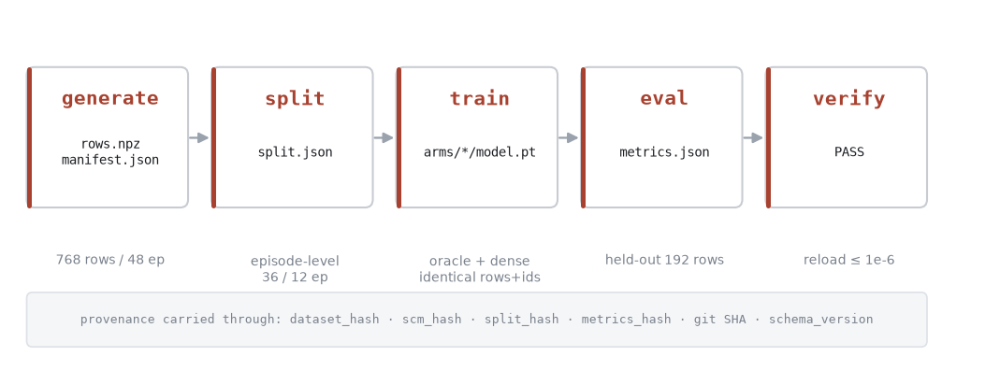
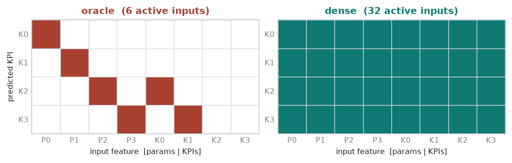
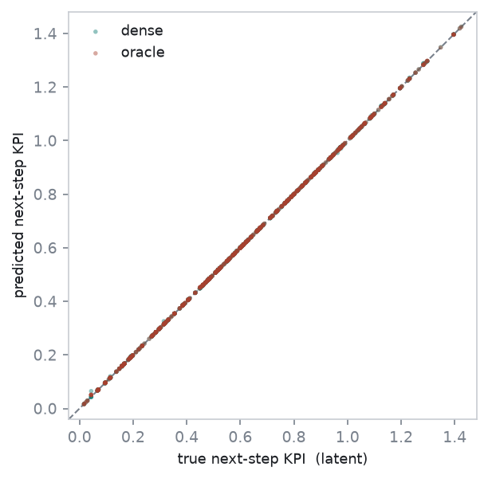
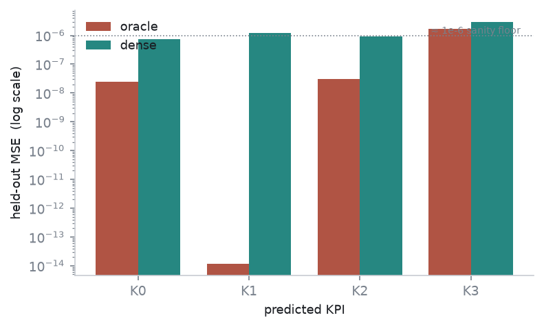

CDL/MLPInference models used
in prior reports; (ii) E1 is the linear, noiseless recovery control, and the graph is supplied
to the oracle arm, not learned, so nothing here bears on discovery.
We build a self-contained one-step prediction pipeline on the v2 E1 structural causal model
(generate→split→train→eval→verify) with an explicit provenance
contract: transition rows are a deterministic, byte-regenerable function of the coordinate tape and are
content-hashed; the train/test split is at the episode level (no transition-level temporal
leakage) and is bound to the dataset hash; both model arms consume identical rows and split identifiers;
trained artifacts reload and reproduce their predictions exactly. On this pipeline we measure a
recovery control: an oracle arm whose per-KPI heads are masked to the true structural parents, and a
dense arm of identical capacity (644 parameters each) whose heads see all inputs; the graph
enters only as a fixed input mask, so capacity is matched by construction and the sole difference is the
structural prior. On held-out episodes (192 rows) both arms recover the linear E1 mechanism: aggregate
test MSE is 4.3×10−7 (oracle) and
1.4×10−6 (dense), i.e. root errors below
0.4% of the KPI standard deviation for both. The oracle’s advantage is a
small structural-prior effect concentrated on the single-parent KPI K1
(per-KPI MSE 1.2×10−14 vs
1.2×10−6): the dense arm spends capacity
suppressing seven spurious inputs, the oracle arm does not. Because the graph is supplied and E1 is the
clean control, this is not a discovery result. The measurement fixes the benchmark’s zero point:
on E1, a supplied oracle graph confers negligible held-out prediction separation over a matched dense
model, so any prediction-level separation of interest must originate in harder environments. Separately,
the type-check debt was reduced to zero with annotation-level fixes and no suppressions, restoring a
green ruff/ty/pytest baseline that every pipeline commit preserves.
The prior reports established the project’s prediction-level contribution and a decision-level STOP verdict on the legacy environments, and identified benchmark redesign as the precondition for further model work. Before the redesigned environments can be evaluated, they need an evaluation apparatus whose correctness is independent of the models under test: a pipeline that persists data, splits it without leakage, trains comparable arms on identical inputs, evaluates held-out prediction, and can prove that a saved artifact reproduces its results. This report builds that apparatus on the simplest v2 environment (E1) and validates it against the one case whose answer is known in advance — the recovery control — before any discovery or harder environment is introduced.
The work is deliberately minimal and is not wired into the legacy train.py /
get_env / ExperimentConfig path: the v2 environments remain disconnected
simulator fixtures, and the pipeline is a standalone package (cdd_oran/e1slice/) with its
own CLI. This isolates pipeline correctness from the discovery/planning stack, which is the next,
separately testable layer.
The pipeline has five stages (Fig 1), each emitting a hashed, reloadable artifact. A transition row
is x = (params, prev_kpis) at the committed state s_t
and y = the latent KPI vector after exactly one advance. Because
advance computes kt+1 = f(prev_params, prev_kpis) from
the committed state and only then commits the pending (post-action) params, the action applied at step
t does not enter yt (one-step actuation
latency); the label is therefore a clean function of the recorded x, and the
per-episode random-action policy serves only to diversify the params seen along a trajectory.
Observation noise is off, so latent equals observed.

Four properties are enforced and tested rather than assumed:
verify stage reloads each on-disk artifact, re-predicts, and requires the maximum
absolute difference to fall within a frozen tolerance. Observed:
0.0 ≤ 10−6 for both arms.
Evaluation metrics are written to an immutable, deterministic metrics.json (a re-run
reproduces the file, and it carries a content hash over the numeric results).
The two arms share one architecture — a small per-output MLP head (hidden width 16) for each of
the four KPIs — and differ only by a fixed, non-trainable input mask (Fig 2). For KPI
j, head j receives x ⊙ mj.
The oracle mask is the true-parent set of each KPI, read from E1V2Env.true_adj_matrix()
(the source indexing already matches the [params | KPIs] input layout); the
dense mask is all-ones. Because the mask is a buffer, not a parameter, both arms carry an identical
parameter budget (644), so the comparison isolates the structural prior from
capacity. The E1 mechanism the arms are fitting is

On the 192 held-out rows both arms recover the mechanism: predicted and true next-step KPIs lie on the identity line for both (Fig 3). Aggregate test MSE is 4.25×10−7 (oracle) and 1.43×10−6 (dense); the corresponding root errors are 6.5×10−4 and 1.2×10−3, i.e. roughly 0.2% and 0.4% of the KPI standard deviation (σ ≈ 0.29–0.32). The per-KPI breakdown (Table 1, Fig 4) locates the oracle’s advantage: it is largest on the single-parent identity map K1 = a1·P1, where the masked oracle head sees only P1 and fits to near machine precision (1.2×10−14), while the dense head must additionally drive seven spurious weights toward zero and settles near the same ≈10−6 floor as its other outputs. On the two-parent KPI K3 (which reads a KPI parent, K1) both arms are at their highest error (1.6×10−6, 2.9×10−6), and the gap between arms is smallest there.
| arm | K0 | K1 | K2 | K3 | test MSE | test MAE | train MSE | params |
|---|---|---|---|---|---|---|---|---|
| oracle | 2.4e−08 | 1.2e−14 | 3.1e−08 | 1.6e−06 | 4.25e−07 | 1.4e−04 | 3.8e−08 | 644 |
| dense | 7.3e−07 | 1.2e−06 | 9.2e−07 | 2.9e−06 | 1.43e−06 | 5.4e−04 | 4.7e−07 | 644 |


E1 is the recovery control by design, so the informative content of this measurement is the magnitude of the oracle–dense prediction separation, not its sign. With generous shared capacity on a linear noiseless mechanism, a matched dense model recovers E1 to within a fraction of a percent of the KPI scale, and a supplied oracle graph improves held-out MSE by a factor of about three that is dominated by one trivially-structured KPI. In the terms of the prior reports’ prediction-vs-decision framing, this fixes the prediction-level zero point: on the clean control, structure — even a perfect, supplied structure — buys negligible held-out prediction advantage. Any prediction-level separation that would matter for the thesis must therefore come from environments where a dense model of matched capacity cannot recover the mechanism from all inputs: residual non-linearity, unobserved confounding, observation noise, or shared-parent coupling that penalises spurious edges. Establishing those environments and re-running this same pipeline on them is the intended use of the apparatus.
This report does not revisit the decision level and does not involve any learned graph; it is consistent with, and does not alter, the standing STOP position or the established prediction-level contribution.
The type-check debt noted in prior working notes (20 ty diagnostics) was reduced to zero
with annotation-level fixes and no suppressions: a correlated-branch None
narrowed by an explicit invariant assertion in models/cdl.py; a stale snapshot tuple
annotation corrected to its true arity; a test double replaced by the real typed object so a function
contract is actually checked; two dictionary-unpack call sites given explicit keywords or a
TypedDict; and one imprecise NumPy stub bridged with a documented boundary
cast. The changes were split into a behavior-affecting commit (the assertion) and an annotation-only
commit. The resulting baseline — ruff 0, ty 0,
pytest 190 passed / 1 xfailed — is preserved by every pipeline commit;
the pipeline adds 23 tests covering determinism, schema, leakage, capacity matching, immutability, and
reload reproduction.
CDL and MLPInference
models the project uses elsewhere. Substituting those (and matching their capacity, which is
non-trivial because of CDL’s per-child heads) is a separate layer.The apparatus is the substrate for the next two independently testable layers, in order: (i) causal discovery on this same persisted-data spine, replacing the supplied oracle mask with a learned one, so that recall and its prediction-relevance can be measured under controlled data rather than post-hoc on legacy checkpoints; and (ii) an action-executing episodic runner to move from one-step prediction to in-distribution→OOD trajectory evaluation. Both are prerequisites to re-testing the standing STOP position under the redesigned suite. The environments in which a matched dense arm should fail to recover the mechanism — and where an oracle or learned graph could therefore show a prediction-level separation — are E2–E5; running this pipeline on them is deferred to those layers and to the environment redesign it depends on.
cdd_oran/e1slice/ (dataset.py,
split.py, model.py, evaluate.py); CLI
scripts/e1_slice.py (generate | split | train | eval | verify); tests
tests/test_e1slice_*.py (23). Figures generated by the co-located
make_figs.py from a live pipeline run.f746e3f (dataset), 1ffe67d (split),
ed758a4 (arms + training), 57bcd46 (eval + verify); tooling baseline
02fe62c (assertion narrowing), fb91e2a (annotations). Branch
feat/v2; no retraining of prior checkpoints; no legacy-path changes.